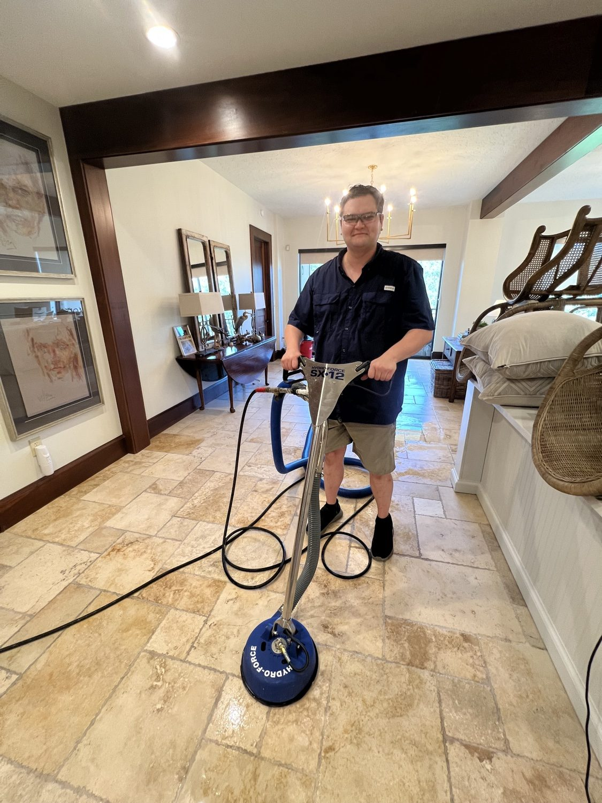

From the blog
Move In Move Out Cleaning in Mobile, AL: What to Expect
November 9, 2026

Moving is hard enough without scrubbing an empty house on top of it. A move in move out clean is the deep clean that happens when a home is empty, either right after the boxes leave or right before your furniture arrives. No furniture in the way means every surface, corner, and cabinet gets reached. Here is what a professional move clean covers around Mobile, from Daphne and Spanish Fort to Saraland, Satsuma, and Tillmans Corner.
What a move out clean covers
- Every room, top to bottom. Dusting, wiping, vacuuming, and mopping in each room, including closets, baseboards, light fixtures, and ceiling fans.
- Kitchens get the full treatment. Inside and outside of cabinets and drawers, appliance exteriors, stovetop and oven, sink and faucet, and countertops.
- Bathrooms get scrubbed hard. Showers, tubs, toilets, sinks, mirrors, and tile, plus the grime that builds up behind and around fixtures.
- Floors throughout. Hard floors mopped and carpets vacuumed edge to edge, including the lines of dust that show up once furniture is gone.
- Windows and blinds. Interior glass, sills, and tracks, plus dusting blinds and wiping down window frames.
- The spots people forget. Inside the fridge if it stays, laundry room surfaces, garage entry, and the front porch.
What a move in clean covers
A move in clean covers the same ground, with a different goal. Instead of handing a home back, you are starting fresh in it. That means extra attention to the kitchen and bathrooms, a wipe down of every cabinet and drawer before your dishes go in, and a full floor clean before the moving truck arrives. If the previous tenant left dust or pet hair behind, a move in clean takes care of it before your boxes come through the door.
Why it matters for your deposit
Most landlords and property managers in the Mobile area expect the home back in the condition you found it, minus normal wear. A professional move out clean is the simplest way to meet that bar. It also gives you a clear record of the condition you left the place in. Take photos after the clean, room by room, before you hand over the keys.
How to get ready for the crew
- Be fully moved out first. The crew needs empty rooms to do the job right. A few leftover boxes in the garage are fine, but rooms should be clear.
- Leave the power and water on. The crew needs lights and running water through the day of the clean.
- Point out problem spots. Stains, pet damage, or anything unusual. Tell us up front so the right supplies and time are planned.
- Agree on the key handoff. Lockbox code, property manager pickup, or meet us at the door. Whatever works, just let us know ahead of time.
- Book before moving week. Move out cleans fill up fast at the end of the month. A week or two of lead time keeps your date open.
How pricing works
Move cleans are priced by the size of the home and its condition, since an empty three bedroom in Midtown Mobile and a five bedroom in West Mobile are very different jobs. Every move clean gets a custom quote, so you know the number before we start. Call or use the quote form and tell us the square footage, bedroom and bathroom count, and whether it is a move in or a move out.
Moving soon? We can handle the cleaning.
Kinney Cleaning Services does move in and move out cleaning across Mobile County and the Eastern Shore. Veteran owned and operated.
Call (251) 767-0754 Get a Custom Quote